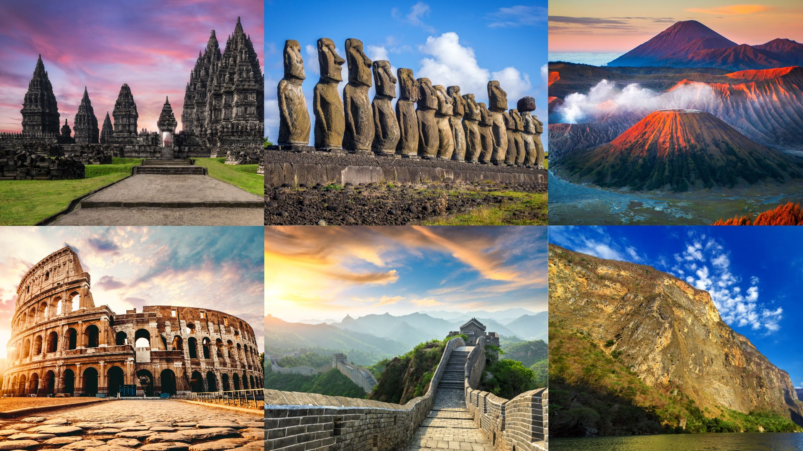
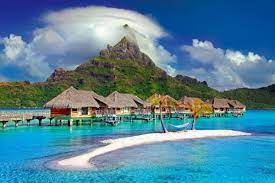
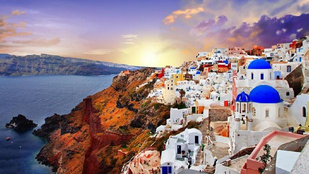
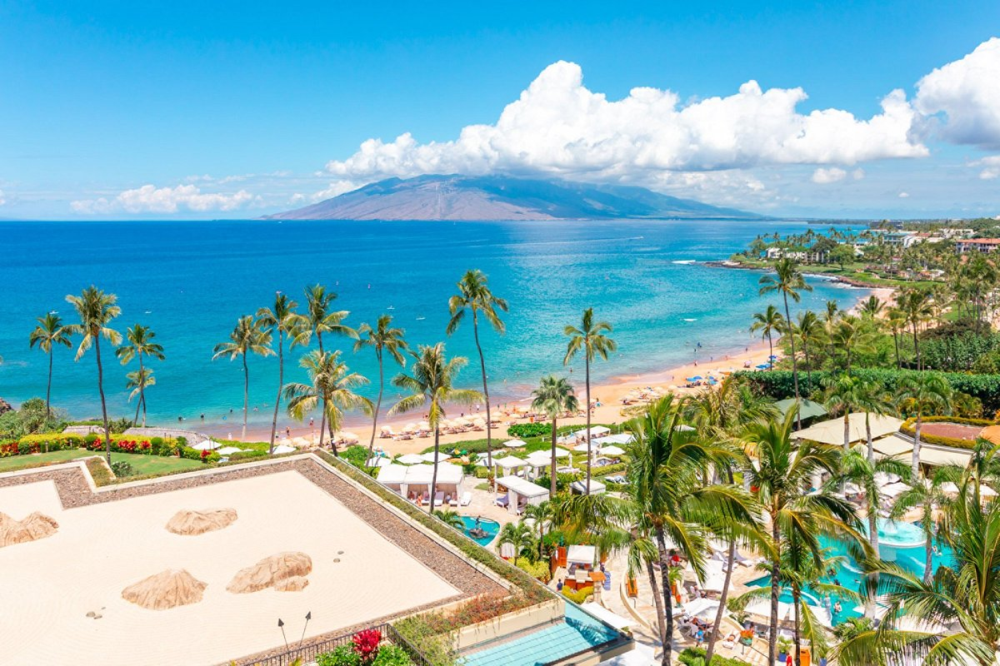
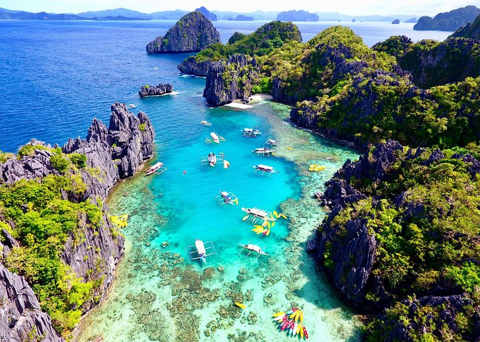
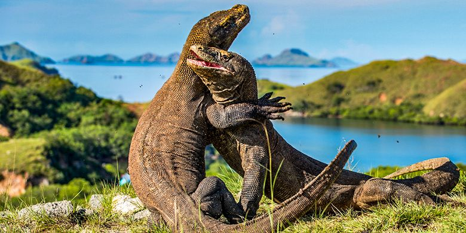
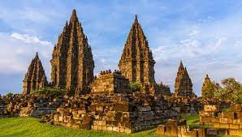
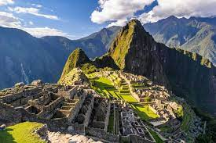

Bora Bora

Terkenal dengan laguna birunya yang jernih, Bora Bora adalah pulau romantis di Polinesia Prancis yang menawarkan vila-vila air mewah dan keindahan alam laut yang menakjubkan. Dengan pantai pasir putih yang lembut, air laut yang jernih, dan hamparan terumbu karang yang memukau, Pulau Indah Resort adalah tempat yang ideal bagi para pencinta alam dan petualang sejati. Anda dapat merasakan kehangatan matahari sambil bersantai di tepi pantai.
Santorini

Dikenal dengan arsitektur putihnya yang khas dan pemandangan matahari terbenam yang spektakuler, Santorini adalah pulau Yunani yang memukau.Pulau Santorini menawarkan berbagai aktivitas yang dapat dinikmati oleh semua tamu. Mulai dari petualangan menyelam, bermain kayak di tepi pantai, hingga menjelajahi hutan belantara, kami memiliki kegiatan yang sesuai dengan selera dan minat Anda.
Maui

Pulau ini menawarkan keindahan alam yang luar biasa, mulai dari gunung berapi hingga pantai berpasir hitam, dan aktivitas seperti selancar dan penyelaman.Kamu juga dapat merasakan lezatnya masakan lokal dan internasional di restoran kami yang menawarkan pemandangan laut yang menakjubkan. Nikmati hidangan segar dengan bahan-bahan lokal yang dipilih secara cermat untuk memberikan pengalaman kuliner yang tak terlupakan.
Palawan

Sebagai salah satu Situs Warisan Dunia UNESCO, Puerto Princesa Subterranean River National Park di Palawan menawarkan pengalaman unik menjelajahi sungai bawah tanah yang mempesona. Anda dapat menikmati keajaiban stalaktit dan stalagmit yang terbentuk selama ribuan tahun, menciptakan pemandangan yang luar biasa.Pengalaman di Palawan tidak hanya tentang keindahan alamnya, tetapi juga tentang bertemu dengan masyarakat lokal yang ramah dan hangat.
Komodo

Selamat datang di Pulau Komodo, sebuah surga alam yang penuh keajaiban dan menjadi tempat hunian bagi naga komodo, reptil raksasa yang menjadi ikon pulau ini. Terletak di tenggara Indonesia, Pulau Komodo dan sekitarnya adalah destinasi wisata yang menakjubkan, memikat wisatawan dengan keindahan alamnya yang unik dan keberagaman hayati.
Prambanan

Prambanan, yang juga dikenal sebagai "Roro Jonggrang," adalah kompleks candi Hindu terbesar di Indonesia. Dibangun pada abad ke-9, candi ini menonjolkan arsitektur yang luar biasa dengan menara-menara tinggi yang memukau dan relief pahatan yang indah. Meskipun Prambanan menjadi destinasi wisata utama, tempat ini masih digunakan untuk upacara keagamaan dan pemujaan Hindu.
Colosseum

Colosseum, juga dikenal sebagai Amphitheatrum Flavium, adalah monumen arsitektur klasik Romawi yang menggambarkan kehebatan kekaisaran. Dibangun pada abad ke-1 Masehi, bangunan ini memiliki kapasitas lebih dari 50.000 penonton dan dirancang dengan presisi arsitektur Romawi yang canggih. Colosseum menjadi saksi bisu bagi berbagai peristiwa sejarah penting Kekaisaran Romawi.
Moai
Moai adalah patung-patung raksasa yang terletak di Rapa Nui, nama lokal untuk Pulau Paskah. Dengan tinggi mencapai 10 meter dan berat hingga beberapa puluh ton, Moai adalah karya seni monumental yang dibuat oleh suku Rapa Nui pada abad ke-13 hingga ke-16.Salah satu ciri khas Moai adalah wajahnya yang besar dan khas, yang menghadap ke arah langit.
Machu Picchu

Machu Picchu, "Kota Tua" dalam bahasa Quechua, adalah kota kuno yang tersembunyi dan terpelihara dengan megahnya. Ditemukan pada tahun 1911, situs ini adalah simbol kehidupan Inka yang maju dan keahlian arsitektur mereka yang mengagumkan. Dengan pemandangan Pegunungan Andes yang melingkupi, Machu Picchu menawarkan lanskap alam yang memukau.
Taj Mahal

Taj Mahal, juga dikenal sebagai "Makam Mahal," adalah struktur marmer putih yang memesona hati dengan keindahan dan keanggunannya. Dibangun oleh Kaisar Shah Jahan sebagai monumen persembahan untuk istrinya yang tercinta, Mumtaz Mahal, Taj Mahal adalah mestika arsitektur yang menggabungkan seni dan cinta. Satu-satunya kata untuk menggambarkan keindahan Taj Mahal pada saat matahari terbit adalah "magis."
ISLAND
Historical Place